Aviatrix Cloud Firewall Lab#
1. Scenario#
ABC Healthcare (a fictitious company), a leading healthcare provider, operates exclusively within the AWS cloud environment. For internet egress traffic, they utilize AWS NAT Gateway. While the NAT Gateway effectively handles IP address translation, it is not intended to serve as a comprehensive security solution. This limited security capability has raised concerns among ABC Healthcare’s management regarding data privacy and HIPAA compliance.
2. Expensive and Limited CSP Native NAT Gateway#
The current AWS NAT Gateway doesn’t provide the necessary visibility and logging capabilities, and it’s also very expensive due to 2 cents per GB egress data processing charges. ABC Healthcare’s average monthly egress traffic is around 500 TB. The native solution also lacks visibility, is cost-prohibitive, and doesn’t support zero trust architecture—putting sensitive patient data and the healthcare provider’s reputation at risk.
2.1 Data Charges Reference#
3. Damaged Reputation and Employee Fired#
To further complicate matters, ABC Healthcare recently suffered a data exfiltration attack, which led to significant disruptions, reputational damage, and a negative impact on its stock value. This incident resulted in the dismissal of the previous cloud network architects.
3.1 You are the Newly Hired Cloud Networking Architect#
You, the newly appointed architect, have been tasked with securing this traffic using the Aviatrix Secure Egress solution. Your mission is to implement a solution that enhances visibility, provides detailed logging, and complies with regulatory mandates while being cost-effective and efficient.
4. LAB Objective#
It is your job to do a POC/POV in your lab and demonstrate how your company can leverage Aviatrix Cloud Perimeter Solution to solve this pain point. You need to deploy the Aviatrix Secure Egress solution using Aviatrix Spoke Gateway to protect internet-bound traffic more effectively than the AWS NAT Gateway. The Zero Trust policy should only allow the following domains and block all other FQDNs. The lab intentionally only provides some of the steps for you to complete this lab. You should leverage docs.aviatrix.com if you are stuck.
allowed-internet-httpdomains*.ubuntu.com
allowed-internet-httpsdomains*.alibabacloud.com
*.amazonaws.com
*.aviatrix.com
*.docker.com
*.docker.io
4.1 Listen to the following recording#
Listen carefully. There will be quiz questions based on this 4 min video, also.
LAB Access Details#
Access credentials#
Username:
student
Password:
127#rdpn8K4GBJ
5. LAB Pre-Req#
Before starting the lab, change the following timers to their lowest value
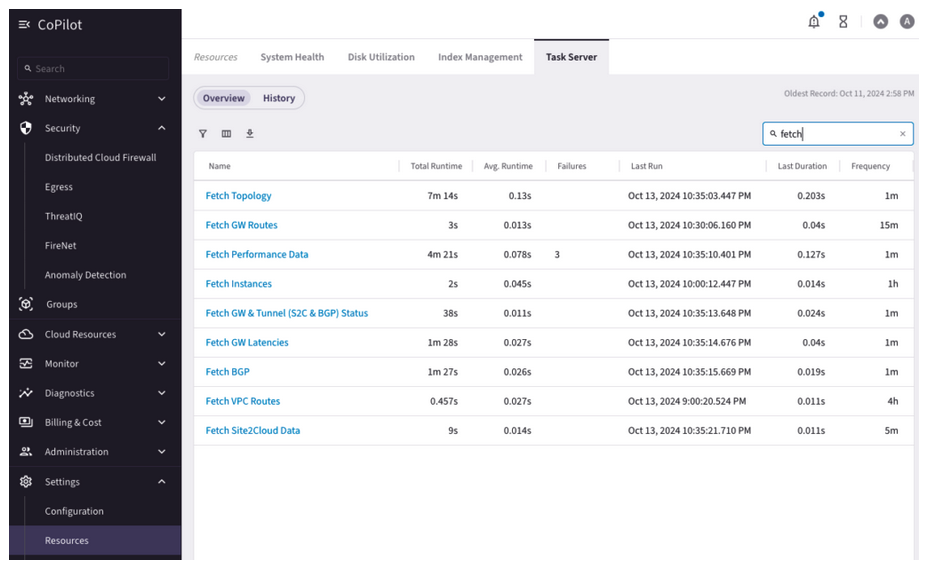
Warning
DO NOT ATTEMPT TO CHANGE THESE TIMES IN PRE-PROD or PROD SETUP. THIS WOULD CAUSE SERIOUS ISSUES.
It should look like the following:
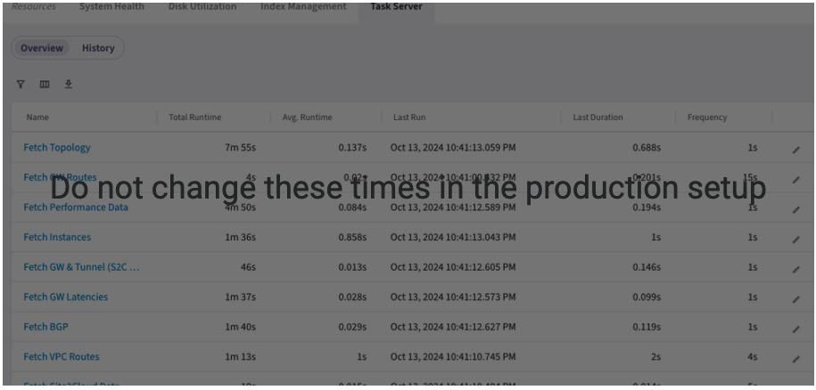
Do not change these times in the production setup
Aviatrix Spoke GW must be deployed in Region us-east-1 in the “egress-vpc”
GW Instance Size should be t3a.small
5.1 Successful Completion of LAB#
After completing the lab, your screen should look more or less like the following. The IP addresses and UUIDs could be different.
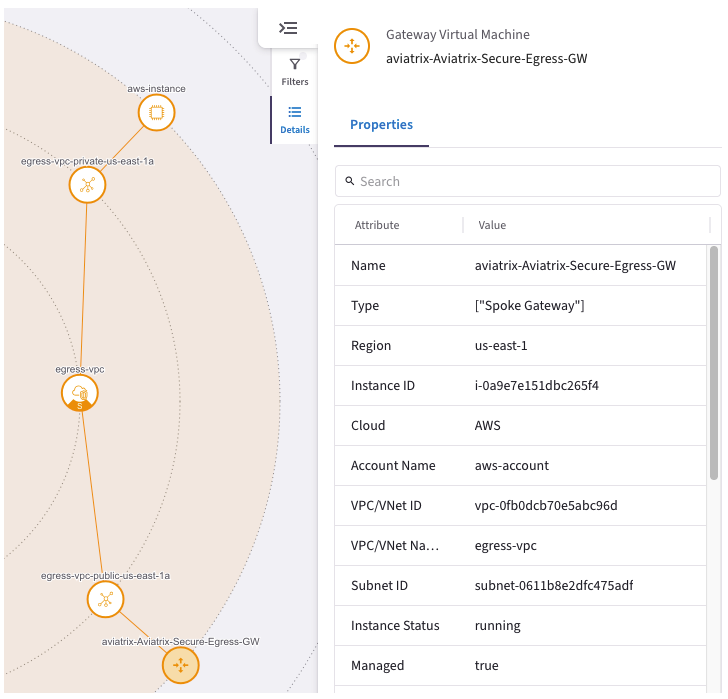
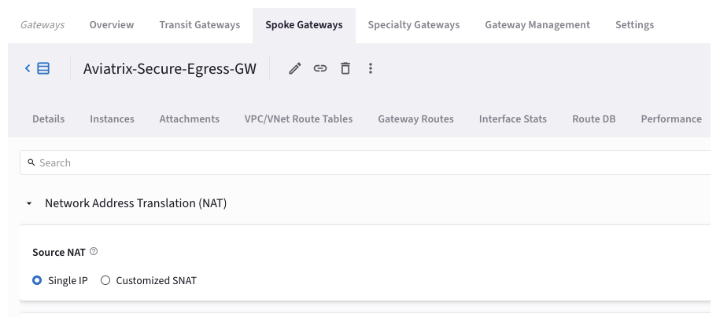
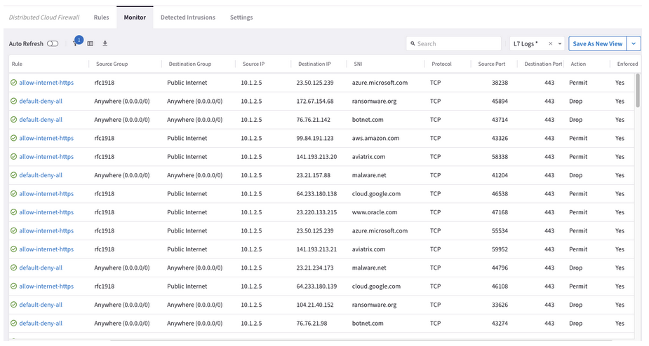
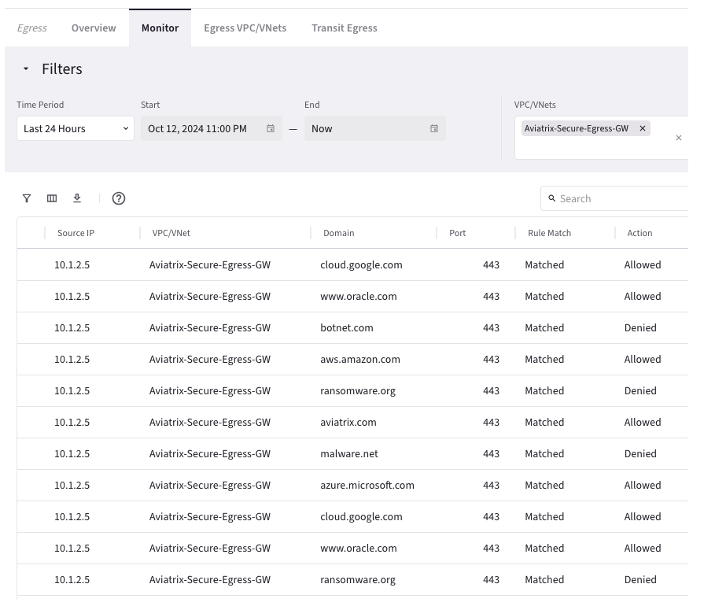
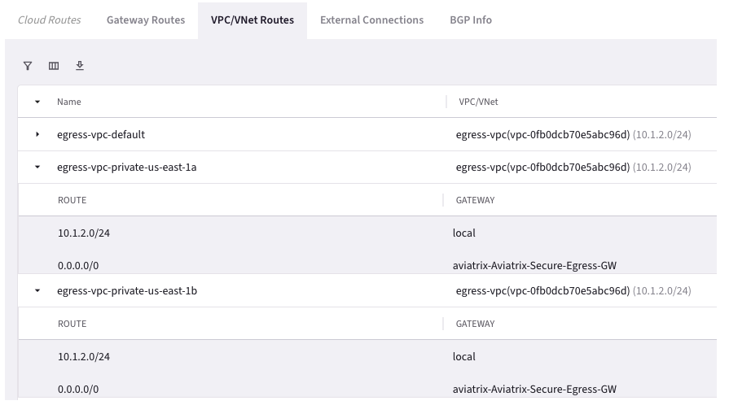
6. Lab Hints#
6.1 Create Secure Egress DCF Rules#
Create three rules
The last DCF rule is a zero-trust rule
Rule 100 is to allow traffic from the test instance on the private IP address to the public internet only to FQDNs specified in the
allowed-internet-httpsweb groupRule 0 is to allow traffic from the test instance on the private IP address to the public internet only to FQDNs specified in the
allowed-internet-httpweb group
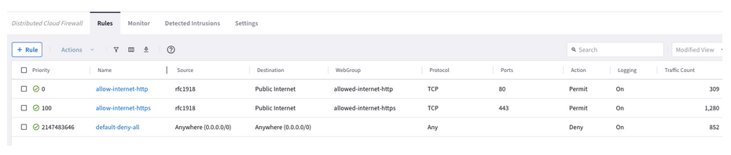
6.2 Create rfc1918 SmartGroup#
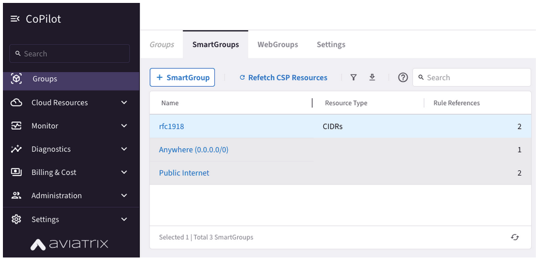
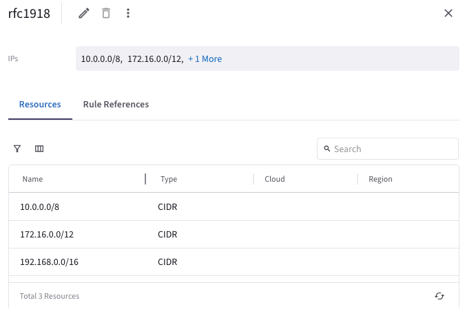
6.3 Create WebGroup to Define FQDN Allowed to Access Internet#
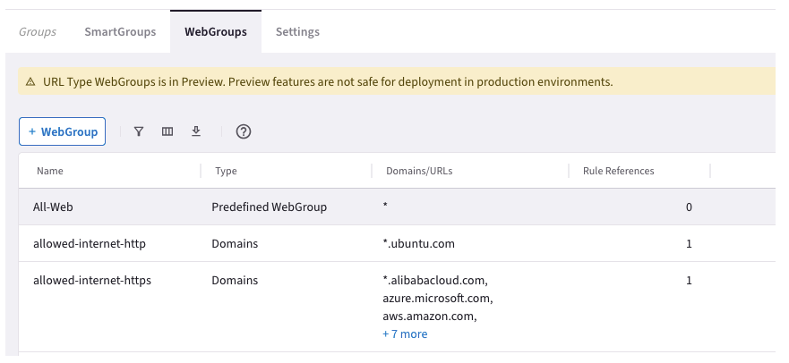
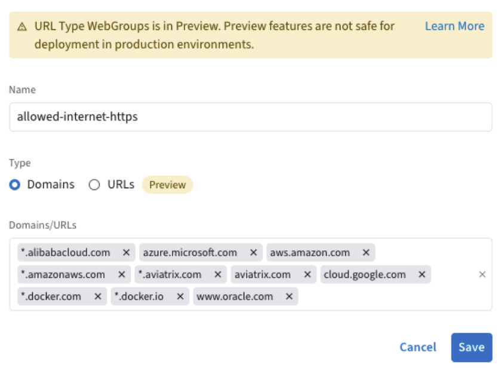

6.4 Deploy Aviatrix Spoke GW#
The public IP address will be different (Public EIP automatically allocated by CSP)
The Subnet CIDR could be different (automatically picked up by Aviatrix Controller)
Region: us-east-1
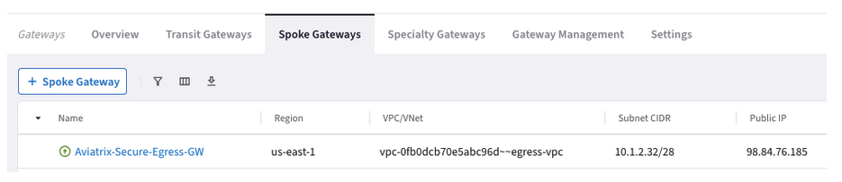
Check the Egress setting. The Egress traffic is going through the AWS NAT GW.
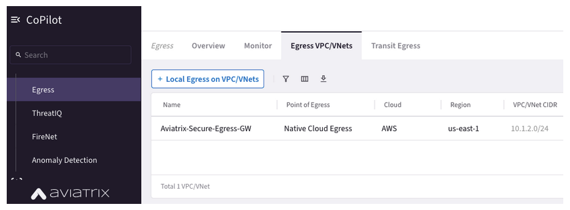
6.5 Enable spoke GW to become the Egress GW#
Click +Local Egress on VPC/VNets.
In the Add Local Egress on VPC/VNets dialog, select the VPC/VNets on which to enable Local Egress.
Click Add.
Read more at Aviatrix Documentation
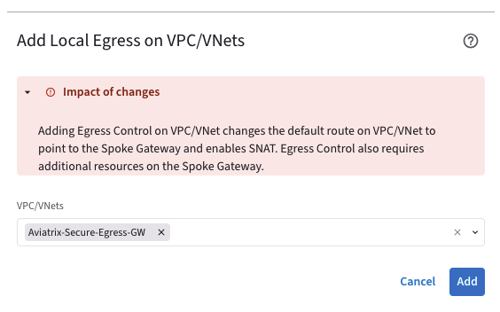
Add Local Egress on VPC/VNets Adding Egress Control on VPC/VNet changes the default route on VPC/VNet to point to the Spoke Gateway and enables SNAT. Egress Control also requires additional resources on the Spoke Gateway.VPC/VNets
Now the diagram should look like the following:
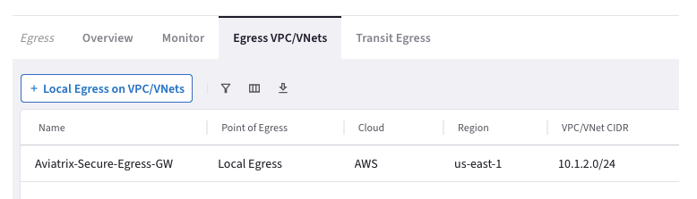
7. Conclusion#
Certainly! Here’s a refined and polished version of your paragraph:
By implementing Aviatrix Secure Egress, our healthcare provider strengthened their security posture, reduced costs, and eliminated the visibility gaps associated with AWS NAT Gateway. Patient data remains protected, and the provider’s reputation is safeguarded. Remember, Aviatrix Secure Egress is your trusted solution for secure and cost-effective management of internet-bound traffic. Need assistance? Our support team is here to help.